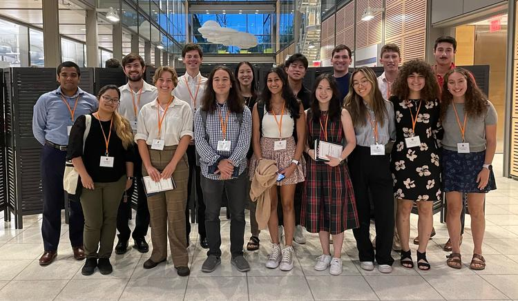

The most distinguished academic prize for Princeton sophomores, awarded to the two members of the sophomore class with highest academic standing for "exceptional achievement during the first year."
Awarded to the top 3% of first-year and second-year undergraduates for "outstanding academic achievement." Selected based on breadth and depth of academic program, as well as intellectual engagement, academic exploration and risk-taking, and cumulative GPA.
This award is given to outstanding Physics undergraduates who have shown excellence in course work and promise in independent research.
Doug Fung Memorial Scholarship
Whittaker Scholarship
Vancouver School Board District Scholarship in Community Service
Top Mathematics Student
Top French Student
Top Chemistry Student
Top 40 internationally.
Youth Science Canada Award (identified as outstanding by national organizers)
Regional Award
Society for Canadian Women in Science and Technology Award (1/270+)
UBC Engineering Physics Award First Prize (1/270+)
Top 25 in Canada.
Individual Top 10 (2nd/~80 in Gr8, 4th/~65 in Gr9, Top 10/~580 + school record in Gr10 - final pre-covid competition)
Led team to 1st place at regionals three years in a row. Placed Top 10 individually and led team to 4th place at provincials in Grade 8.
Honour Roll:
AMC 12B 2021, AMC 12A 2021, Cayley Math Contest 2020 (Top 0.61%), Fryer Math Contest 2019 (Top 3.35%), Pascal Math Contest 2019 (Top 1.06%), Canadian Open Mathematics Challenge (COMC) 2018 Grade 9 BC Zone 1 (Top 7), 3x COMC Performance with Distinction (Top 10%)
School Champion:
AIME 2022 (Top 15.49%, ~top 10% on the AMC 12 qualify), Euclid 2021, Canadian Senior Math Contest 2020, COMC 2020, Cayley 2020, Fryer 2019, CNML 2018